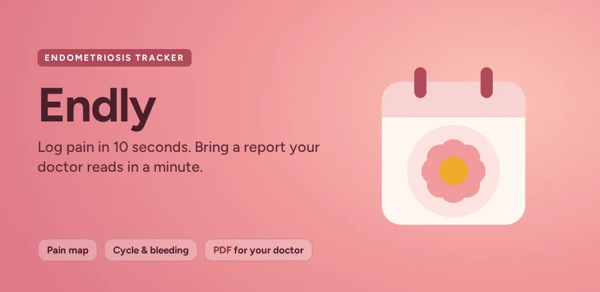

Hatch Day
Hatch Day: Egg Incubator AppEgg incubator tracker: hatch countdown, temperature and humidity targets, turning and lockdown reminders.
Log how you feel in seconds, see how pain follows your cycle and bring a clear report to your next appointment. No account, no ads, no analytics: everything stays on your phone.

Endly is a diary, not a medical device. It does not diagnose, treat or give medical advice. Talk to your doctor about anything you track.
Tap a number for today's worst pain, then add detail only if you have the energy. Your log saves as you tap.
Mark where it hurts on a front and back figure, and how much, plus pain types such as cramping, stabbing, burning or radiating.
Rate period pain, pain during or after sex, pain with bowel movements, pain when urinating and pelvic pain outside your period, each 0 to 10.
Cycle day and expected period worked out from your own logs, and a calendar tinted by pain with bleeding days marked.
Log a flare with start, end, worst pain and what helped. Add your own symptoms and factors, or switch on a mode for when your periods have stopped.
One-tap doses, a health history of diagnosis, surgeries and treatments, and an emergency info card for the emergency room.
Diagnosis often takes years and appointments are short. Endly turns your logs into a two-page PDF your doctor can read in a minute: pain days, severe days, bleeding, where it hurts, symptoms, medication and your health history. If you changed treatment, it also compares the weeks before and after.
The details are in the Endly section of the privacy policy.
Monthly, yearly or one-time purchase. Prices will be shown in the app in your local currency.
Yes, on Android. Endly is live on Google Play. The iPhone version is in preparation for the App Store.
People living with endometriosis or adenomyosis, or with pelvic pain that has not been explained yet, who want a simple record of symptoms to show a doctor.
On your phone. Endly has no account, shows no ads and uses no analytics or crash reporting. The only network connections are for purchases. Optional backups are encrypted on your device and saved to a place you choose.
No. Endly is a diary and a way to organise what you notice. It does not give a diagnosis or medical advice. Talk to your doctor about anything you track.
Yes. Logging, the body map, cycle and calendar view, medication and health history, the pain scores, flare log, widget, emergency card and CSV export are free. Pro adds the doctor PDF report, treatment check, impact report, medication reminders and refill alerts, encrypted automatic backup and longer insights.
English, German, French, Spanish and Italian.
Read the privacy policy and Terms & Conditions. Questions or feedback: support@mintwavestudio.com.
Egg incubator tracker: hatch countdown, temperature and humidity targets, turning and lockdown reminders.
Expiration date tracker: scan best-before dates, no item limit, reminders before food, medicine and documents expire.
See what you can spend today. Private budget planner and expense tracker: no bank login, no ads.
Last updated: